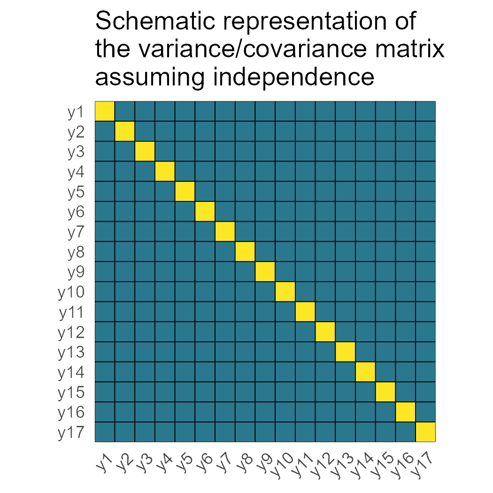
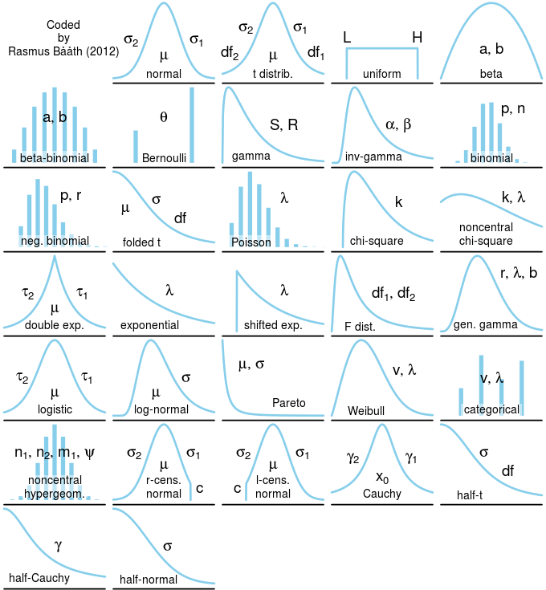
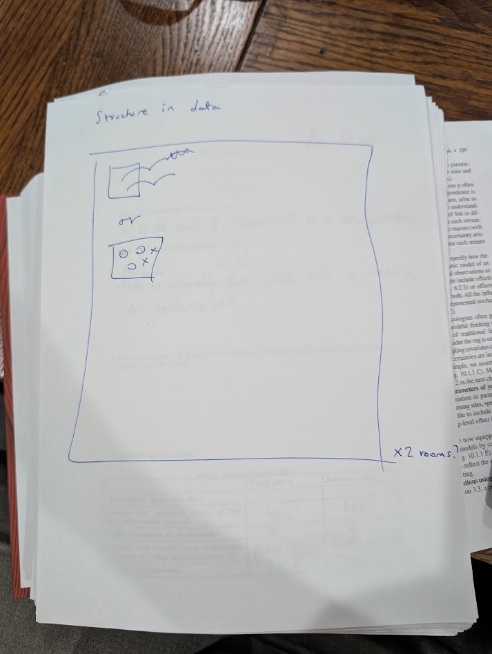
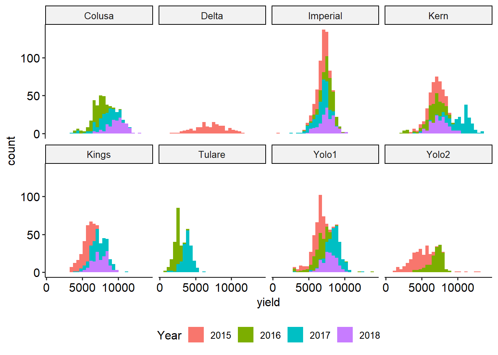
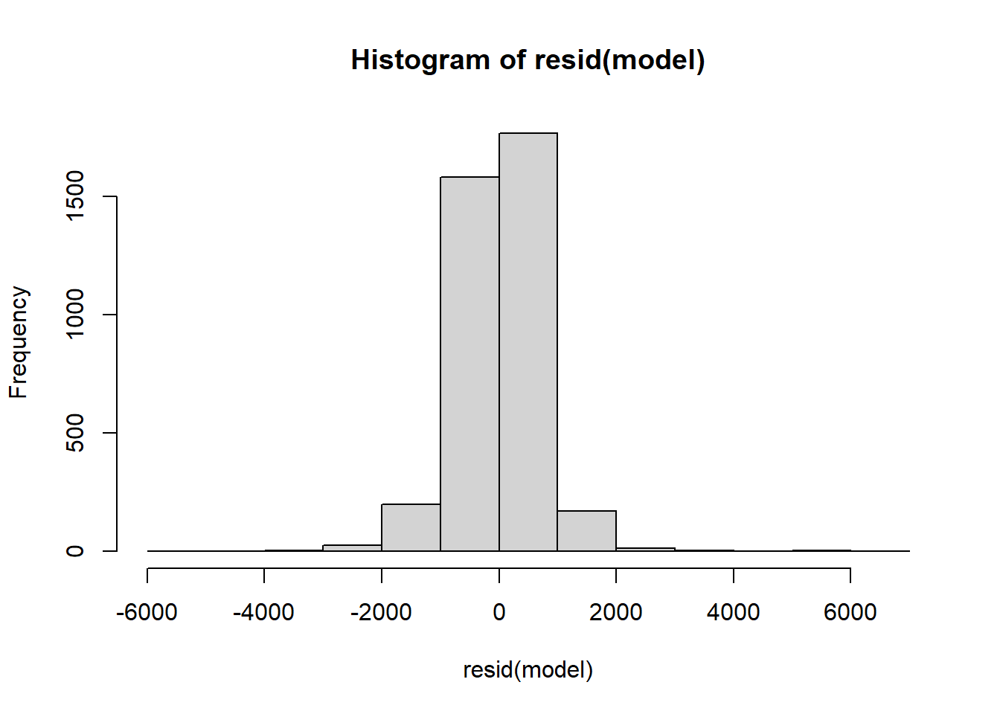
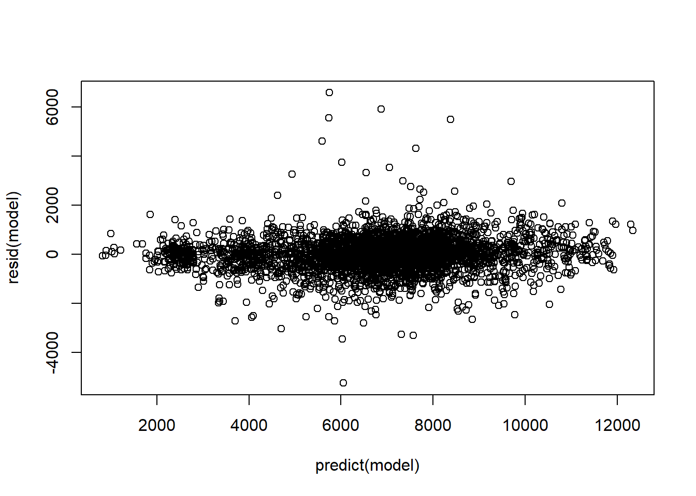
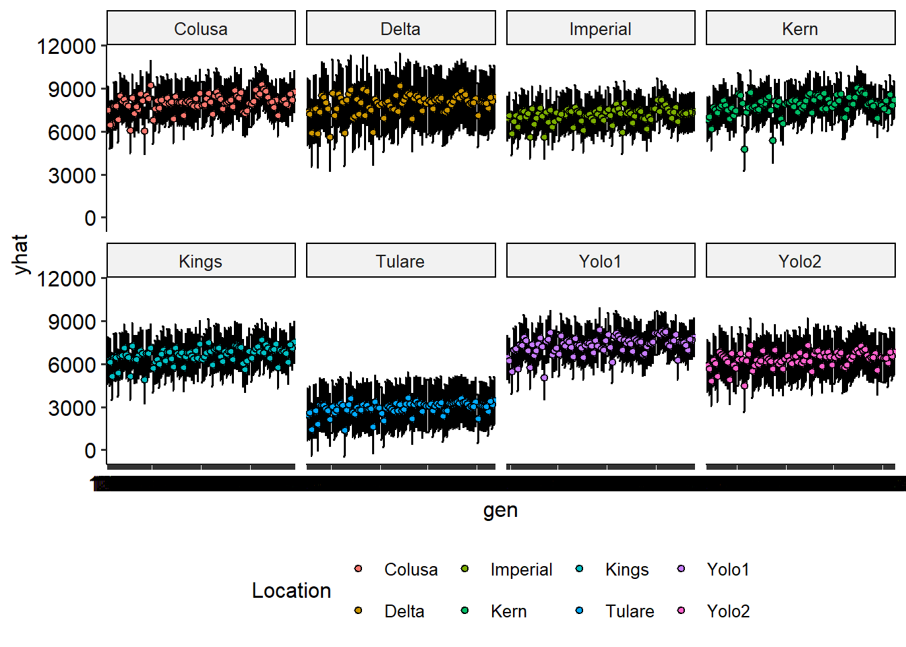

6 Día 3 (tarde): Pensar un modelo jerárquico.
6.1 Discusión: qué dice Gelman?
- Discusión del paper Gelman (2012) – 30 minutos.
6.2 Review
Consider the linear mixed model
\[\mathbf{y} \sim N(\mathbf{X}\boldsymbol{\beta}, \mathbf{V}),\] where:
- \(\mathbf{y}\) is the vector of the response,
- \(\mathbf{X}\) is the model matrix (often containing treatment allocation),
- \(\boldsymbol{\beta}\) is a vector containing the estimates for the effects of all variables in \(\mathbf{X}\),
- \(\mathbf{V}\) is the variance covariance matrix for \(\mathbf{y}\).
All-fixed effects models typically assume

6.3 Statistical models
Statistical models are combinations of deterministic and stochastic processes. We often refer to the deterministic process as the equation that constitutes the linear predictor. This outline is partly inspired by Chapter 10 in Hooten and Hobbs (2025).
6.4 Writing hierarchical models
1. Start with the data.
What is the distribution of the data? Right now we will focus on Gaussian data, but be mindful that there are a myriad of probability distributions that can be used to analyze the data.

2. Think about the structure in the data
The structure in the data is what mixed models model best. This refers to the groups of data that were generated together. Multiple authors/statisticians have eluded to this concept using different words:
- “Topographical structure” or “design structure” in Chapter 2 in Stroup et al. (2024).
- “Blocking structure” as decribed in Edmonson (2020).
Oftentimes, there is no textbook definition to a specific data structure like “split-plot design”. In those cases, it is helpful to draw the blueprint in the data to figure out the structure in the data.

3. Think about the treatment effects
Additionally, the treatments (or other covariates may have) effects on the response. Generally, these elements of the model are added independently of the blueprint in the data.
4. Write the full statistical model
The full statistical model combines both topographical (i.e., design) and treatment structures.

6.5 Applied example
The data are unbalanced in both the number of observations per environment and the number of observations of the different genotypes.
A few important points:
- Not all genotypes are present in all environments
- Not all environments were evaluated every year
dat <- agridat::george.wheat |>
filter(year>2014, loc !="Fresno") |>
mutate(env = paste(loc,year),
year = as.factor(year),
gen = as.factor(gen))
dat |>
ggplot(aes(yield))+
geom_histogram(aes(fill = factor(year)))+
labs(fill = "Year")+
theme_pubr()+
theme(legend.position = "bottom")+
facet_wrap(~loc, ncol = 4)
model <- lmer(yield ~ (1|gen) +
(1|gen:loc) + (1|gen:year) + (1|gen:year:loc) +
(1|year) + (1|loc) + (1|year:loc) +
(1|block:year:loc),
data = dat)

## Linear mixed model fit by REML ['lmerMod']
## Formula: yield ~ (1 | gen) + (1 | gen:loc) + (1 | gen:year) + (1 | gen:year:loc) +
## (1 | year) + (1 | loc) + (1 | year:loc) + (1 | block:year:loc)
## Data: dat
##
## REML criterion at convergence: 62542.4
##
## Scaled residuals:
## Min 1Q Median 3Q Max
## -6.7065 -0.4621 0.0271 0.4703 8.4070
##
## Random effects:
## Groups Name Variance Std.Dev.
## gen:year:loc (Intercept) 187252 432.7
## gen:loc (Intercept) 178062 422.0
## gen:year (Intercept) 50046 223.7
## gen (Intercept) 340308 583.4
## block:year:loc (Intercept) 117910 343.4
## year:loc (Intercept) 937024 968.0
## loc (Intercept) 2144794 1464.5
## year (Intercept) 401328 633.5
## Residual 612076 782.4
## Number of obs: 3772, groups:
## gen:year:loc, 993; gen:loc, 598; gen:year, 172; gen, 92; block:year:loc, 91; year:loc, 23; loc, 8; year, 4
##
## Fixed effects:
## Estimate Std. Error t value
## (Intercept) 6765 651 10.39# plot(emmeans(model, ~gen))
dat_pred <- expand.grid(loc = unique(dat$loc),
gen = unique(dat$gen)) |>
left_join(dat |> dplyr::select(loc, gen) |>
unique() |> mutate(present = "yes")) |>
mutate(present = ifelse(is.na(present), "no", present))## Joining with `by = join_by(loc, gen)`pred <- predict(model,
newdata = dat_pred,
re.form = ~ (1|gen) + (1|loc) + (1|gen:loc),
allow.new.levels = TRUE,
se = T)
dat_pred$yhat <- pred$fit
dat_pred$se <- pred$se.fitdat_pred |>
ggplot(aes(gen, yhat))+
geom_errorbar(aes(ymin = yhat - se*1.96,ymax = yhat + se*1.96), shape =21)+
geom_point(aes(fill = loc), shape =21)+
labs(fill = "Location")+
theme(legend.position = "bottom")+
facet_wrap(~loc, ncol = 4)
6.6 Tarea
- Leer capítulo 11 en Gelman and Hill (2006)